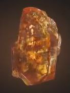
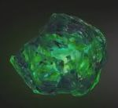
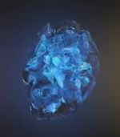
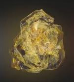
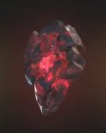
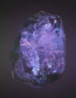

| Soul |
Orange |
The Soul Gem was in the possession of the High Evolutionary when he oversaw the rebirth of Adam Warlock. He gifted the gem to Warlock to aid him in his mission to save the world of Counter-Earth. During that time, Warlock primarily used the gem's powers to restore evil New Men to their pre-evolved animal forms. |
 |
| Time |
Green |
For a long time, knowledge of the true nature of the Gems was unknown and the six were known collectively as "Soul Gems", with much of their powers unrealized by their users. The Gardener was the first known holder of the one that would eventually be identified as the Time Gem |
 |
| Space |
Blue |
For a time, the five combined Gems were thought to be destroyed, but a conclave of the Elders of the Universe eventually learned that they could not be truly destroyed in such a manner and that they were actually scattered across the universe. Having a plan to use the Gems to further their ambitions, the Elders set out to gather them together again. Of these, only the Mind Gem's circumstances were specified, having come into possession of the Kree. |
 |
| Mind |
Yellow |
The Mind Stone was originally housed in the Chitauri Scepter given to Loki to aid in his invasion of Earth. Placed within the sceptre, the stone granted its wielder the power to enslave others' minds. When Loki was defeated by the Avengers, the sceptre was taken into the custody of S.H.I.E.L.D. |
 |
| Reality |
Red |
The Reality Stone initially allowed its user to alter reality to what one wanted or break the laws of reality, logic and physics. Minor uses allowed one to resurrect the dead, distort reality around someone so it was incomprehensible, or other things that would normally be impossible. More powerful uses allowed one to create any type of alternate reality one wished. At its peak when backed by the other gems it allowed one to alter reality on a universal scale |
 |
| Power |
Purple |
The Orb containing the Power Stone was originally sought out by the thief Peter Quill. It eventually came Korath the Pursuer under the hunt of Ronan the Accuser who was under the orders of the intergalactic warlord Thanos. Quill made his way to Xandar to sell it to the Broker. However, the Broker backed down on their deal when he learned Ronan was also after the Orb. Quill was soon after attacked by Gamora, Thanos' adopted daughter who was hoping to sell the Orb to the Collector |
 |